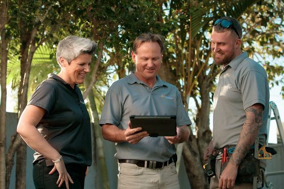
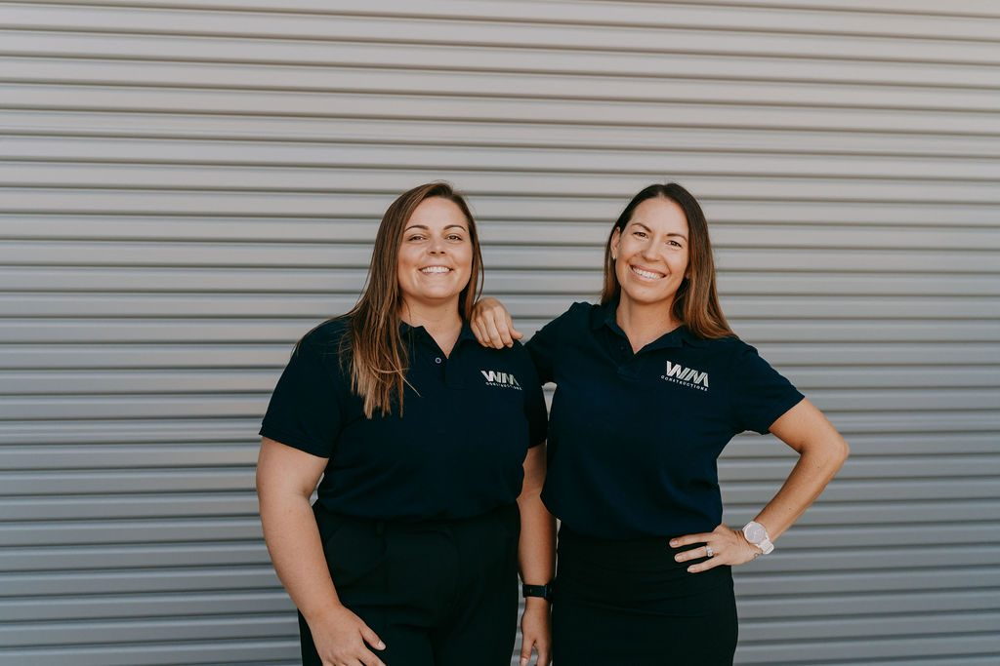
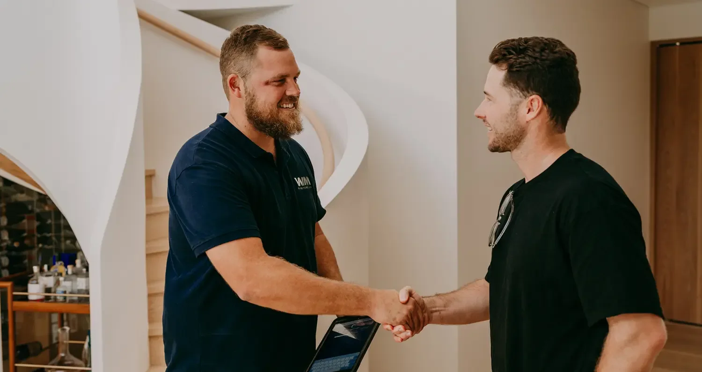
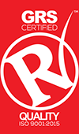
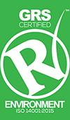
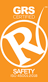
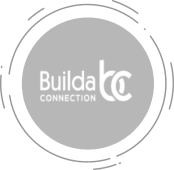

Who we are as a business,is who we are as people.
A family owned builder, founded on the Sunshine Coast in 2000, and trusted by insurers, aged care operators and commercial clients across the east coast.
Twenty five years of building what matters.
Watermark Constructions is a family owned business, founded in 2000. In that time we've delivered exceptional building outcomes and services to more than 65,000 Australian homes and businesses.
Recognised as one of Australia's leading insurance repair builders, we've grown in recent years to service the commercial, education, hospitality, retail and aged care sectors, bringing the same rigour, care and accountability to every project.
With the experience to manage multiple stakeholders, and a culture that is disciplined and results driven, we continue to expand our capability and our appetite for excellence. We are the building specialist of choice today, forging the landscape and partnerships of tomorrow.


A track record you can build on.
Founded

On the Sunshine Coast, Queensland.
Projects delivered
Homes and businesses since 2000.
Years of service

Servicing Queensland and Tasmania.
Offices
From Cairns to Hobart.
Heads for business.
Hearts for people.

Our people
As a building specialist we're just as committed to the quality of the product as we are to making a difference for our employees and the communities we work in. With an impressive leadership, estimating, project management and trade resume, we design and deliver the solutions you've been looking for.

Leaders in industry
Watermark has established its own construction methodology through extensive experience in the field. We create and implement best practice, using sound principles to govern safety, quality and environmental controls, and deliver through exceptional business acumen across all of our activities.

We care
We strive to be a valued and welcome extension to every organisation, community and customer we engage. Watermark Constructions can be trusted to deliver quality, efficiency and genuine care, on every job, every time.
The heart of our business.
Creating genuine and meaningful relationships with our residential and commercial property owners, engineers, designers, developers and insurance partners reflects the heart of the way we work.
We believe in giving back to the communities we serve, especially those directly affected by the events we rebuild after. We also commit funds and resources to prevention and resilience initiatives, because the best way to support a community is to help it stand stronger next time.
- Family owned and operated
- Dedicated project team on every job
- ISO 9001, 14001 and 45001 certified
- Licensed in QLD, NSW and Tasmania
Certified, trusted and proud supporters



